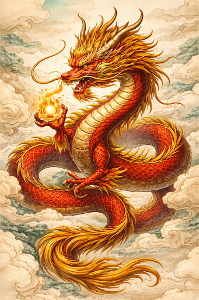

The Chinese Dragon

Origin and Myth
The Chinese dragon, or lóng, is one of the most iconic symbols in East Asian mythology. Unlike Western dragons, Chinese dragons are benevolent, wise, and deeply connected to water. They are said to control rain, rivers, and storms, bringing prosperity to the land and protection to the people.
Key Traits
- Symbol of strength, wisdom, and good fortune
- Controls water, rain, and weather
- Serpentine body with no wings
- Associated with emperors and divine power
Cultural Significance
In Chinese culture, dragons represent imperial authority, prosperity, and protection. They appear in festivals, architecture, and ancient stories as guardians of balance and harmony. Their presence symbolizes hope, strength, and the promise of good fortune.